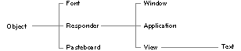

Copyright ©1995 by NeXT Computer, Inc. All Rights Reserved.
| 1 |
Root Class
| Library: | libsys_s.a | |
| Header File Directory: | /NextDeveloper/Headers/objc | |
| Import: | objc/Object.h, appkit/appkit.h, dbkit/dbkit.h, 3Dkit/3Dkit.h, or the interface file of any class that inherits from Object |
| Introduction |
| In the Objective C language, new classes are created as subclasses of an existing class: |
 @interface NewClass : OldClass
@interface NewClass : OldClass
| But not every class can be a subclass. The inheritance hierarchy has to start somewhere. There has to be at least one root class, a class that doesn't inherit from any other class: |
 @interface RootClass
@interface RootClass
| Theoretically, there can be many different root classes, a separate one for each project or kit perhaps, or one for each group of closely related classes. However, in practice, all Objective C inheritance hierarchies are rooted in the same class--the Object class. As you look at the inheritance diagrams for the various software kits documented in this book, you'll notice that each one begins with the Object class. For example, the figure on the next page shows the Object class and part of the Application Kit inheritance hierarchy. |
|  |
| Figure 1-1. Some Application Kit Classes
Because all classes inherit from the Object class, it can define only general properties that all objects share. These shared properties are the ones that connect objects to the run-time system and enable them to behave as objects. For example, the Object class gives all objects the ability to identify their class and to find which method to use in response to a message. It provides class objects with methods to create new instances, and instances with methods to forward messages and archive and copy themselves. In short, the Object class defines what it is to be an Objective C object. It's precisely for this reason that Object is used as the universal root class. There's no point in reinventing object-oriented behavior each time you develop a new class. It's better to declare a new class as a subclass of Object, or of another class that inherits from Object. The Object class is the root class used by all NEXTSTEP software kits and the one that should be used in all NEXTSTEP applications. However, NEXTSTEP includes one other root class for a special purpose. The NXProxy class, described in Chapter 6, "Distributed Objects," defines an object that can stand in for, and assume the identity of, another object, one located in a remote process. By sending messages to the proxy, an application can in fact communicate with the remote object. NXProxy is a root class only because proxy objects need to behave differently from all other objects; they can't inherit typical object behavior. Except for special cases like this, all ordinary objects should inherit from the Object class. In addition, the Foundation Kit defines its own root class, NSObject. Foundation is a group of classes that provides the functionality of the Common classes (List, Hash, Storage, and so on) as well as other features such as strings and collections. All Foundation classes build upon NSObject, just as NEXTSTEP software kits are based on the Object class. For more information about NSObject and Foundation, see the Foundation Reference located on-line in /NextLibrary/Documentation/NextDev/Foundation. For information on using Object- and NSObject-based classes together, see HybridWorld in the Foundation Reference. |